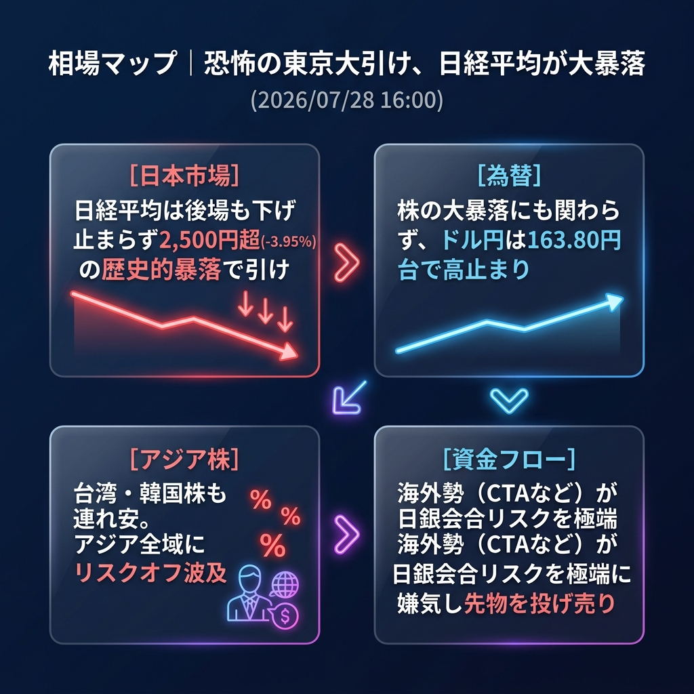

日経平均は大引けにかけてさらに売り込まれ、2,500円超の大暴落（-3.95%）で歴史的な着地。日銀会合リスクを極端に嫌気したCTAの投げ売りが東京市場を恐怖に陥れましたが、為替は163.80円台で全く動じておらず、異様なコントラストを見せています。
「東京市場の恐怖の大引け」と「日銀リスクの先取りパニック」。
後場に入っても押し目買いは全く機能せず、日経平均は前引けの安値をさらに下抜けし、62,364.92円で大引けを迎えました。
日本株の大暴落がアジア市場全体（台湾・韓国など）にもリスクオフとして波及しつつありますが、米国株先物（ダウ・S&P）は底堅く推移しており、パニックの中心はあくまで日本市場に留まっています。
| 指数・銘柄 | 現在値 | 前回比（前日比） | 騰落率 | 確認事項 |
|---|---|---|---|---|
| S&P 500 (ES=F) | 7,435.0 | -13.25 | -0.18% | 時間外で小幅調整 |
| Nasdaq (NQ=F) | 27,965.0 | -225.0 | -0.80% | 引続き上値重い |
| Dow (YM=F) | 52,420.0 | +38.0 | +0.07% | プラス圏を維持 |
| 日経225現物 | 62,364.92 | -2,566.27 | -3.95% | 大引け。歴史的大暴落 |
| CME日経225先物 | 62,450.0 | -1,605.0 | -2.51% | 現物引け後も低迷 |
| USD/JPY | 163.850 | +0.148 | +0.09% | 株の大暴落を無視して高止まり |
| EUR/USD | 1.1370 | -0.0005 | -0.04% | 小幅なもみ合い |
| 金 | 4,035.5 | -41.5 | -1.02% | リスクオフでドルに資金集中 |
| 原油 | 81.60 | -1.01 | -1.22% | 需要懸念で下落トレンド継続 |
| BTCUSD | 63,405.0 | -301.66 | -0.47% | 株安に連れ安も下値は限定的 |
欧州勢がこの日本株のクラッシュを「グローバルなリスクオフの始まり」と捉えるかどうかが最大の焦点です。欧州株が連れ安になれば、米国株先物も一段安となる可能性がありますが、ダウ先物が堅調であることから、欧州市場は冷静にスタートする公算も大きいです。
欧州市場オープン直後に、欧州株価指数が大幅安で始まり、世界的なリスクオフ連鎖が発生した場合。ドル円もリスクオフの円買いで163円台を割り込む急落シナリオが浮上します。